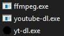
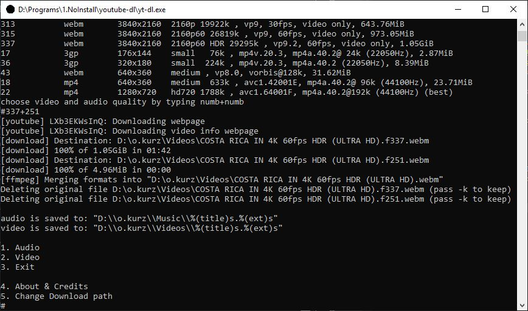

yt-dl
is a comandline "simplifier" for youtube-dl, that let's you download videos in any quality including 1080p and 4K, also convert to mp3 if you want
get yt-dl here
get youtube-dl here
get ffmpeg here
After downloading all of these put the in the same folder like this.
You can now lauch yt-dl and follow the instructions to download videos or music. (by default songs and videos are saved to the same folder as youtube-dl.exe)
If you are chaning the path don't forget quotes "" type evey backslash twice and at the end tipe %(title).%(ext)s
Me downloading some 4K nature video in maximum video and audio quality